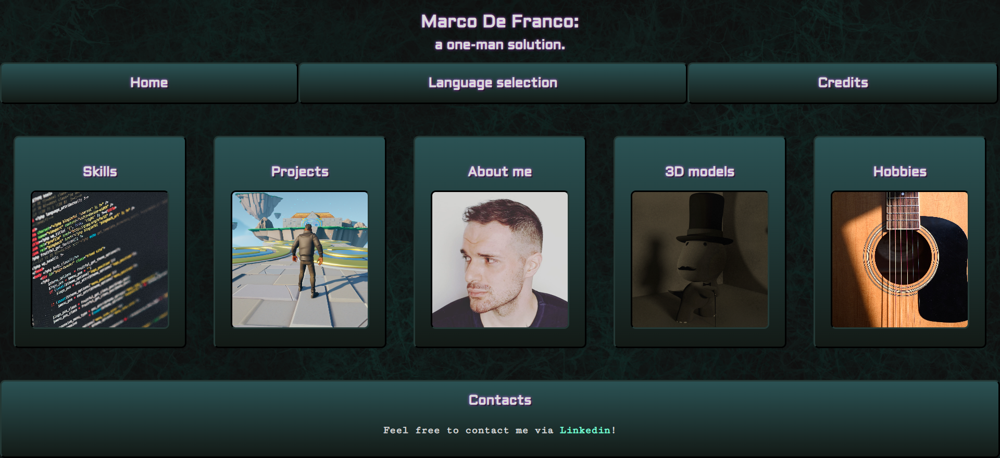
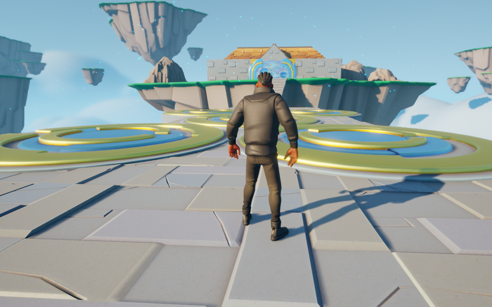
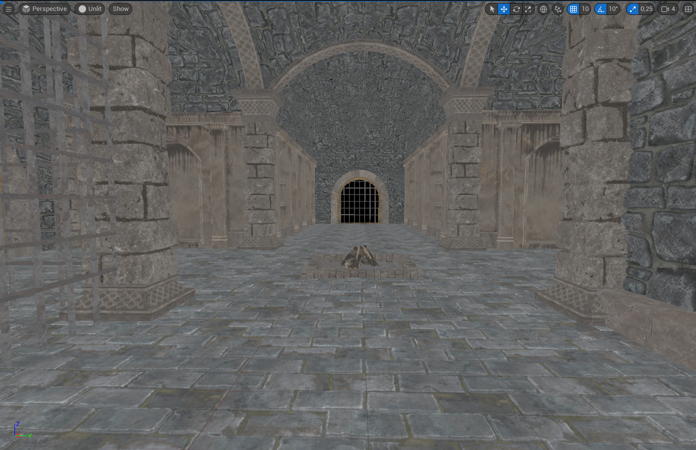

Progetti:
I miei lavori più recenti.
Il mio primo sito web (HTML)
 Il mio primo tentativo nel creare un sito web
(seguendo un corso su Udemy).
Il mio primo tentativo nel creare un sito web
(seguendo un corso su Udemy).
Come suggeriesce la descrizione, è stato fatto utilizzando esclusivamente
HTML e, come potete vedere da questo screenshot,
l'estetica non era il suo forte. Il sito web di un programmatore degli
anni 90 sarebbe più presentabile di questo. Ciononostante, è stato un
buon modo per mettere alla prova le mie capacità e dimostrare che
sono in grado di scrivere in HTML (almeno a livello base). Non c'è
molto da aggiungere, se non che questa prima versione non mi mancherà.
R.I.P.
Il mio secondo (ed attuale) sito web (HTML & CSS)

L'attuale versione di questo sito. Questa volta, non
mi sono affidato a Udemy, ma alla mia sola conoscenza dei linguaggi.
Chiamarlo "allo stato grezzo" sarebbe un signor eufemismo. Sono
perfettamente consapevole del fatto che sia, per essere gentili, non
esattamente un design fresco, magari con una sidebar occultabile
rappresentata da tre linee e colori vibranti, sebbene usati con
parsimonia per dare spazio ad uno sfondo accattivante in bianco e nero.
Ho anche avuto la sfacciataggine di mostrare il prodotto finito ad
alcuni miei amici che lavorano come web designer e front end developers
(persone che comprendono lo sforzo dietro la creazione di un primo
sito web) e mi hanno detto che aveva un bell'aspetto. Poi, ho deciso
di mostrarlo ad amici che non avevano lo stesso background. Diciamo
solo che non sono stati così gentili.
Ciononostante, non mi rende minimamente meno orgoglioso del mio
risultato. Ogni feedback è un buon feedback!
Ho imparato molto su CSS nella sua creazione. Le più
importanti (e frustranti da comprendere) riguarda il posizionamento.
Inoltre, ho fatto molta pratica con i flexbox.
Ovviamente, sto già lavorando ad una nuova versione ma, nonostante
tutto, avrò bei ricordi di quella attuale.
Warehouse wreckage (UE5 - Blueprints)
 Il mio primo progetto di Udemy tramite una serie-tutorial su UE5 e C++,
consiste in un'introduzione molto beginner friendly ad Unreal Engine.
Si tratta di un mini-gioco in cui bisogna far cadere tutti i barili
con un numero limitato di munizioni (la sfera metallica luminosa sul
pavimento).
Il mio primo progetto di Udemy tramite una serie-tutorial su UE5 e C++,
consiste in un'introduzione molto beginner friendly ad Unreal Engine.
Si tratta di un mini-gioco in cui bisogna far cadere tutti i barili
con un numero limitato di munizioni (la sfera metallica luminosa sul
pavimento).
Ora, avevo già lavorato con UE4 in passato, quindi quasi nulla di ciò
che ho visto mi è apparso nuovo.
Non posso negare, però, di essere riuscito a produrre il mio
primo vero gioco! Si tratta di un prodotto solido?
Assolutamente no. Almeno, è bug-free? Sono sicuro al 99% che non lo sia.
Era esattamente ciò che l'istruttore aveva inttenzione di creare? Sì.
Ciò perché doveva essere inteso come un mezzo per introdurre i
novizi alle vie del grande e potente Unreal.
Detto ciò, proverò a crearne una versione customizzata e bug-free? Sì.
Ha bisogno di redenzione! Sarà un buon gioco, questa volta? Non
esageriamo!
Obstacle assault (UE5 - Blueprints & C++)

"Se conosci C++, sai già creare degli script in Unreal!"
-cit. Nessuno.
Questo progetto è stato inteso come introduzione all'uso di
C++ in Unreal Engine. Entusiasmante, vero? Beh...
Se si riesce a superare l'essere costretti ad abolire regole sacre
delle convenzioni programmative quali "le variabili non devono mai
iniziare con una maiuscola" e "non dovresti essere in grado di
editare variabili private", allora... ancora no.
Durante lo sviluppo di questo progetto, sono stato in grado di far
muovere delle piattaforme avanti ed indietro e a farne ruotare altre
in eterno. Tutto con il solo utilizzo di C++. Se dovesse sembrare
noioso non preoccupatevi, lo è. Ma comprendo di dover rivedere la
definizione di variabili, funzioni e cicli prima di arrivare alla
ricca, possente OOP in tuta la sua gloria. Quindi, sarò paziente e
felice di quanto abbia ottenuto fino a questo punto: un platformer 3D
con alcune... beh... piattaforme che fanno avanti e indietro ed
altre che girano su esse stesse.
Quindi, si tratta di un buon gioco, tutto sommato? No. Gli darò
un'altra occasione rifacendolo? Probabilmente no. Ma ho imparato
alcuni dettagli sulla sintassi usata in UE5. Roba da incubi, perlopiù,
ma sono disposto a continuare...
Crypt raider (UE5 - C++)

L'istruttore dice che, in questo progetto, faremo una
completa transizione a C++. Onestamente, dubito lasceremo
mai del tutto i Blueprint fuori dall'equazione, ma sarei ben lieto
di scoprirmi nel torto.
Ad ogni modo, sono ancora allo stadio di level design di questo
progetto quindi, si spera, vi saranno aggiornamenti interessanti in
futuro.